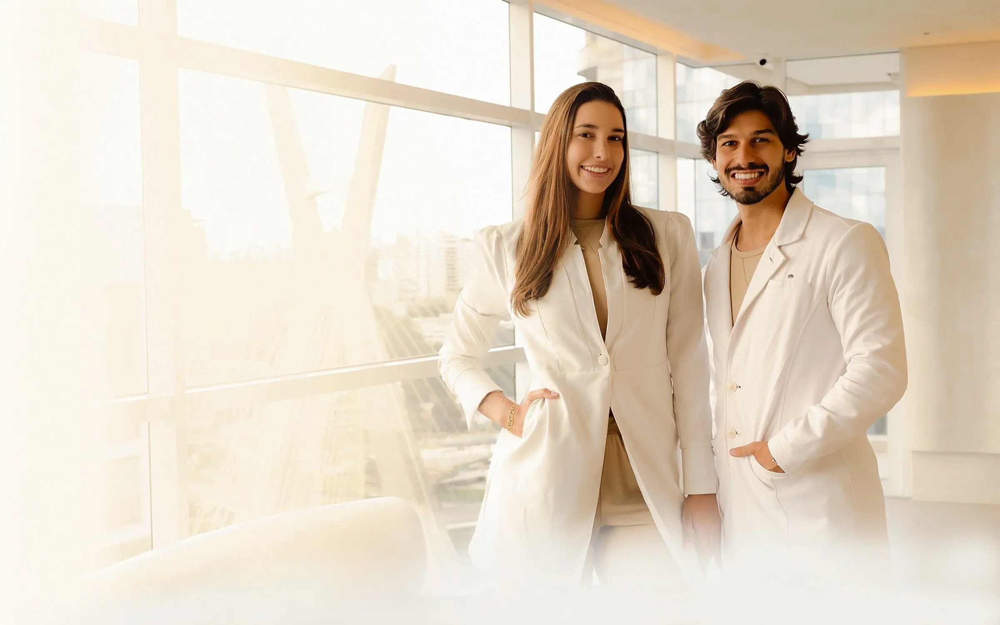
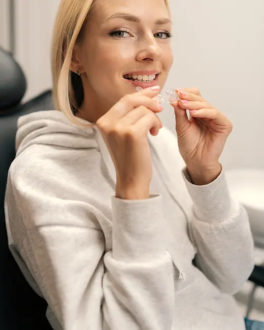
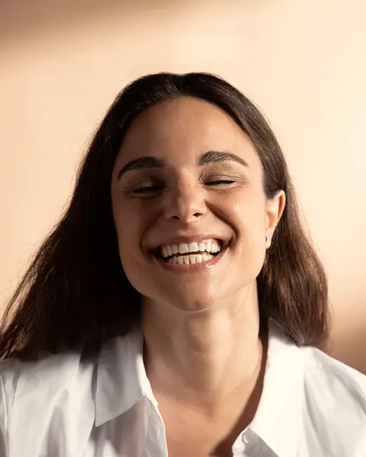
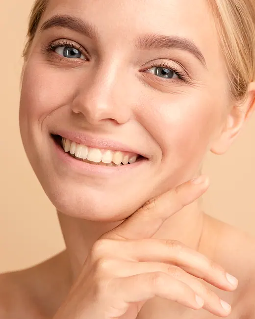
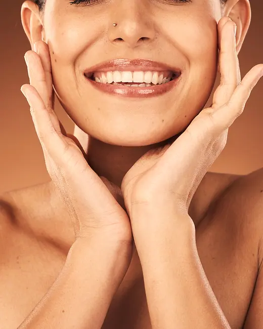
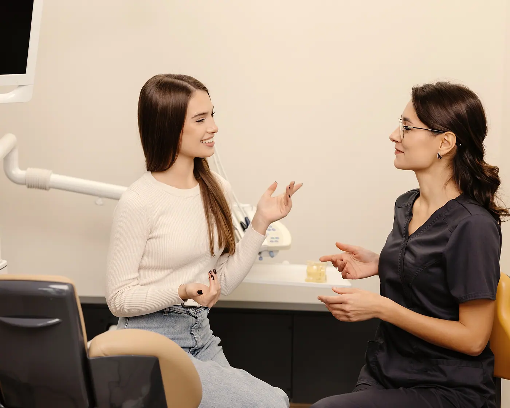
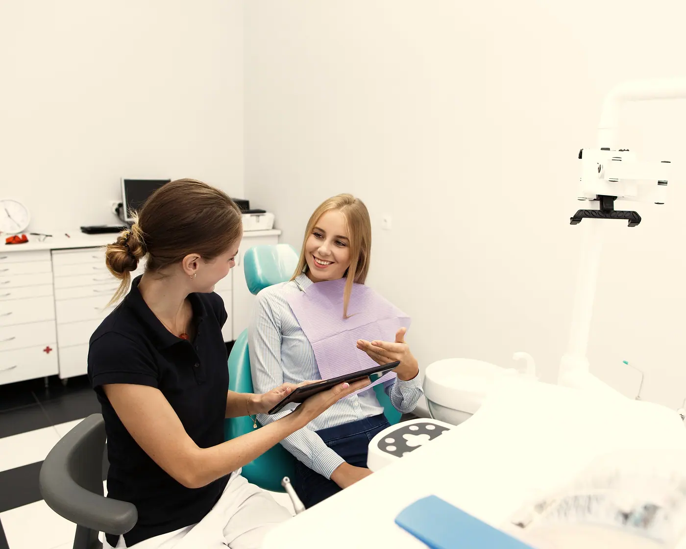
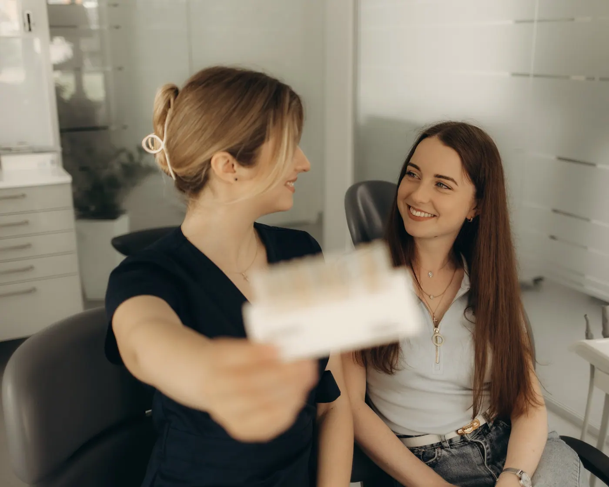
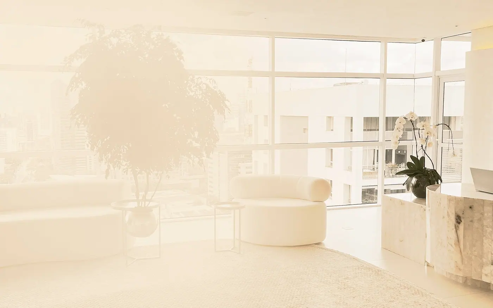

Odontologia estética na Berrini, São Paulo
Um sorriso mais harmônico começa com um planejamento feito para você.
Na DOCS, Dr. Daniel e Dra. Mariana unem diferentes especialidades para planejar tratamentos estéticos com naturalidade, proporção e cuidado em cada detalhe.
5,0 no Google · Berrini, São Paulo · Atendimento com hora marcada
O que você deseja transformar no seu sorriso?
Conheça algumas das soluções planejadas pela DOCS de acordo com as necessidades de cada sorriso.
-

Invisalign
Alinhadores transparentes para corrigir o posicionamento dos dentes com mais discrição no dia a dia.
Agendar avaliação -

Lentes de porcelana
Para quem deseja ajustar forma, proporção e cor com planejamento personalizado e foco em naturalidade.
Agendar avaliação -

Lentes híbridas
Uma alternativa estética planejada conforme as características do sorriso e os objetivos do tratamento.
Agendar avaliação -

Lentes em resina
Transformação direta, esculpida dente a dente para equilibrar forma, textura, cor e proporção.
Agendar avaliação
Dois profissionais. Um planejamento pensado em conjunto.
Na DOCS, Dr. Daniel e Dra. Mariana combinam olhares complementares para construir um plano de tratamento individualizado, respeitando estética, função e as características de cada paciente.
Veja como acontece a sua jornada na DOCS
-
1. Avaliação
Entender o que incomoda você e o que deseja melhorar.

-
2. Planejamento
Definir possibilidades e indicação de forma individualizada.

-
3. Tratamento
Executar o plano indicado com acompanhamento próximo.

-
4. Acompanhamento
Revisões e orientações para preservar saúde e resultado.

Experiências de quem escolheu a DOCS
O que incomodava, por que escolheram a clínica e como foi o caminho, na voz dos pacientes.
Mais relatos no Instagram da DOCS5,0 no Google. Veja o que os pacientes dizem sobre a experiência.
Dúvidas frequentes

A resposta certa para o seu caso vem na avaliação, com hora marcada.
Preciso desgastar os dentes para colocar lentes?
A necessidade de preparo depende do caso, do material escolhido e do planejamento. Na avaliação, a equipe analisa a estrutura dental e indica a abordagem adequada para preservar o máximo possível dos dentes.
Qual a diferença entre lentes de porcelana, híbridas e resina?
Cada material possui características e indicações diferentes. A escolha considera o sorriso atual, o objetivo estético, a condição dos dentes e o planejamento definido na avaliação.
Todo mundo pode fazer lentes?
Não. A indicação depende da saúde bucal e das necessidades de cada paciente. Antes de qualquer decisão estética, é necessário avaliar dentes, gengiva, mordida e demais condições do caso.
Como funciona a manutenção?
A frequência de acompanhamento varia conforme o tratamento e as condições de cada paciente. A equipe orienta os retornos e cuidados necessários após a conclusão.
Invisalign é indicado para todos os casos?
A indicação depende do tipo de movimentação necessária e da avaliação ortodôntica. A consulta é o momento de entender se os alinhadores são uma opção adequada para o seu caso.
Como funciona a primeira avaliação?
A primeira etapa é entender sua queixa, avaliar o sorriso e discutir possibilidades. A partir disso, a equipe orienta os próximos passos e o planejamento mais adequado.
Casos reais
Arraste a linha para comparar o antes e o depois.


Casos do Dr. Daniel Ravagnani, CRO-SP (inserir). Resultados variam de acordo com cada caso.